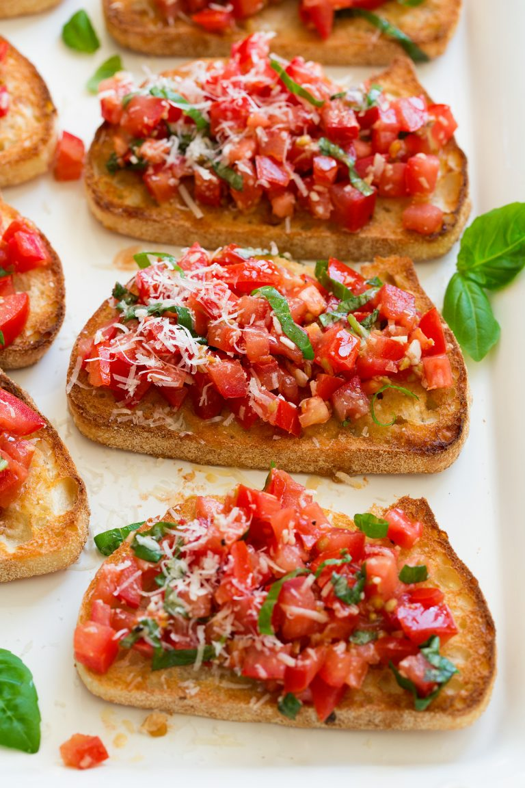
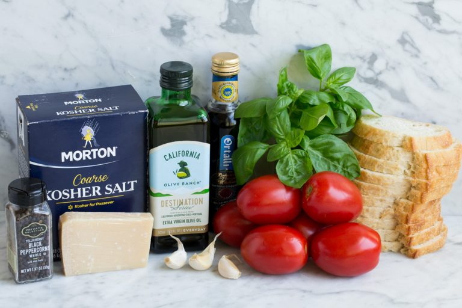
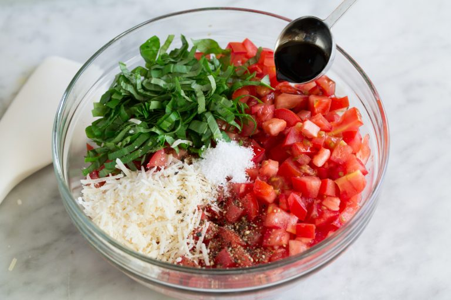
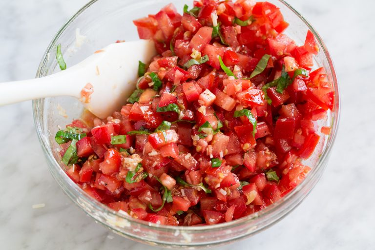

Easy Bruschetta

This easy bruschetta recipe is a refreshing go-to summer
appetizer that will leave everyone satisfied and coming back
for more. Perfect for summer parties, weeknight dinners,
or even weekend brunch!
Love this recipe? Try It!
There’s nothing quite like a good fresh and flavorful bruschetta appetizer
to get your meal started. It’s one of the classic things to order at an Italian
restaurant, and now you’ll love that you can make it at home, any time you want!
With good quality tomatoes everywhere this time of year, there is no excuse to
say no to this easy fresh bruschetta made with fresh basil, balsamic vinegar, and
spread on a warm slice of perfectly crisp toasted bread.
It’s seriously a swoon-worthy recipe you need to try this season!

You may have noticed in the ingredients, basil ribbons are listed as a key component. If you are unsure of what that is, no worries! I will let you know now, it’s not something you can just pick up at the grocery store, pre-prepared. To make basil ribbons you will buy regular basil leaves, and follow a few steps to cut them into ribbons, a process that’s often called chiffonade.
Stack the basil leaves on top of each other in a manner that makes so the leaves cup each other. Next, gently roll the leaves into a cigar-like shape. Hold the roll closed and thinly slice the rolled basil leaves. Continue slicing until the entire roll has been sliced into thin ribbons.
 Making classic fresh bruschetta is a breeze. Anyone can replicate that elegant Italian appetizer with ease. Just follow a few simple steps and it no time you’ll have a completed recipe to be proud of.
For this specific recipe, I chose to use a french loaf, sliced and toasted. I love this style of bread because not only is it what most restaurants serve it with, but it really is the best. If you don’t like french bread, or just want to switch things up, you can serve classic bruschetta on any kind of bread or crackers.